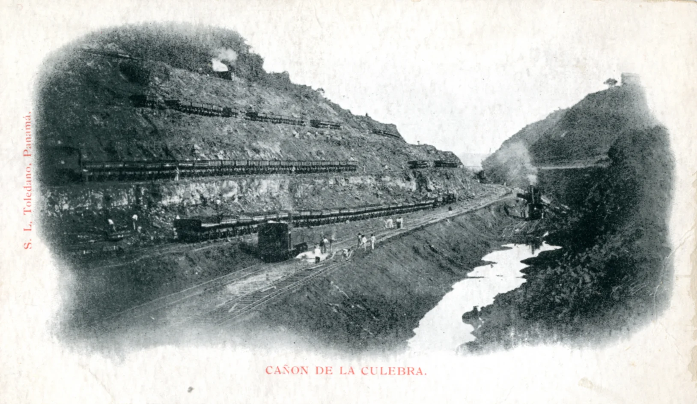
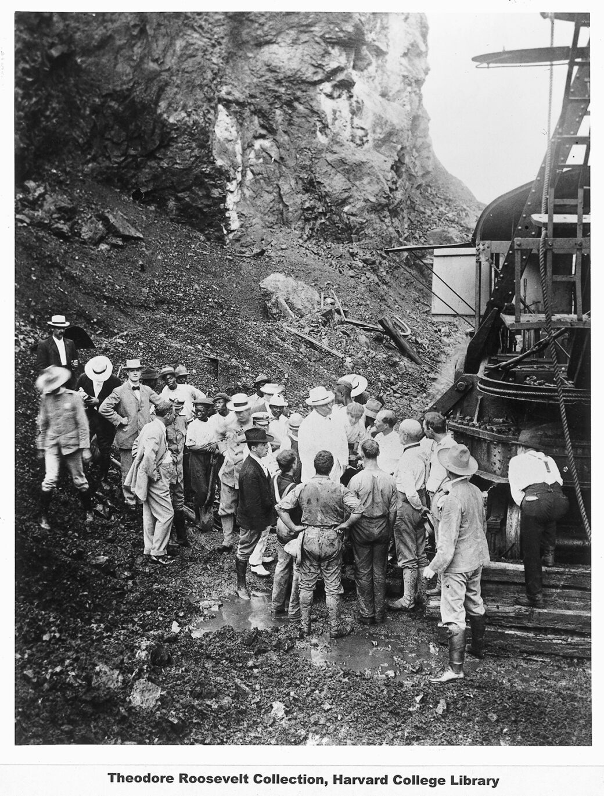
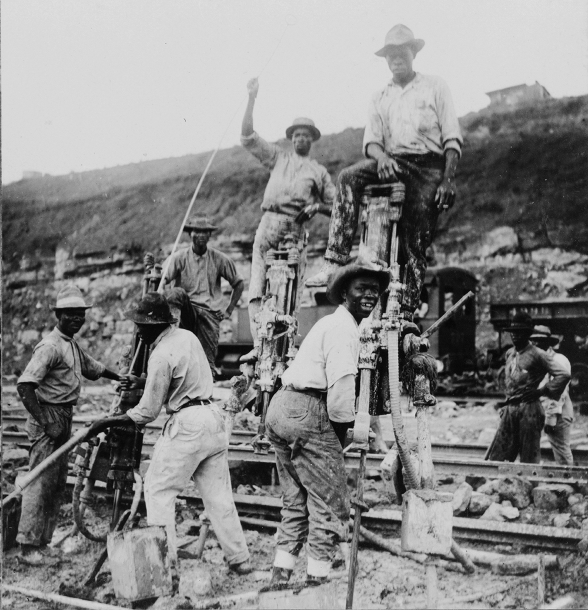

Historic Images

French engineers struggle in tropical terrain, 1880s.

President Roosevelt’s visit in 1906 boosted morale.

Workers from across the Caribbean and Latin America.
French engineers struggle in tropical terrain, 1880s.
President Roosevelt’s visit in 1906 boosted morale.
Workers from across the Caribbean and Latin America.